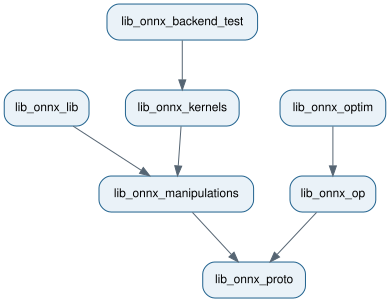

How the C++ libraries are split#
onnx-light is split into small C++ libraries so consumers link only the features they use. Parsing a model does not require schemas, shape inference, kernels, or backend tests.
The dependency graph below points from each library to its dependencies. It is
generated from library_split.dot with
dot -Tsvg.

The base dependency is lib_onnx_proto:
lib_onnx_proto
└── lib_onnx_core
├── lib_onnx_op
├── lib_onnx_shape
├── lib_onnx_patterns
├── lib_onnx_kernels
│ └── lib_onnx_backend_test
├── lib_onnx_gradient
└── lib_onnx_manipulations
└── lib_onnx_lib
lib_onnx_core contains the shared mechanisms used by the extension
libraries: graph helpers, symbolic expressions, the graph builder and pattern
optimizer, runtime execution machinery, and empty dispatch registries.
Concrete schemas, shape functions, patterns, and kernels are registered by
their sibling libraries, so none needs to depend on another extension.
Summary of each library#
onnx_light::lib_onnx_proto— proto-compatible message types, binary parsing and serialization, external data, and encrypted files.onnx_light::lib_onnx_core— graph and symbolic-shape utilities,GraphBuilder, generic pattern optimization, runtime execution, and extension registries.onnx_light::lib_onnx_op— lightweight ONNX operator schemas without full checker or shape-inference support.onnx_light::lib_onnx_manipulations— text parser/printer, composition, and schema-independent model, attribute, and tensor helpers.onnx_light::lib_onnx_lib— the complete ONNX-compatible schemas, checker, inliner, shape inference, and version converter.onnx_light::lib_onnx_shape— concrete shape-inference and peak-memory functions.onnx_light::lib_onnx_patterns— concrete ONNX graph-rewriting patterns.onnx_light::lib_onnx_kernels— reference runtime kernels.onnx_light::lib_onnx_backend_test— generated backend-test cases and their registry.onnx_light::lib_onnx_gradient— reverse-mode gradient generation.
The last three targets are available only when
ONNX_LIGHT_BUILD_KERNELS=ON. With Python enabled, the libraries are shared
so all nanobind modules use the same C++ types; pure C++ builds use static
libraries.
Extension registration#
The core library owns registries but does not register concrete ONNX implementations. Applications select extensions explicitly:
onnx_light::onnx_shapes::RegisterShapeFunctions();
onnx_light::onnx_shapes::RegisterPeakMemoryFunctions();
onnx_light::onnx_kernels::RegisterKernelFunctions();
onnx_light::onnx_patterns::RegisterPatterns();
This keeps linking predictable: an application that does not evaluate models, infer shapes, estimate peak memory, or optimize graphs does not pull in those implementations.
What to link#
Read and write ONNX models —
onnx_light::lib_onnx_proto.Inspect lightweight operator schemas —
onnx_light::lib_onnx_op.Parse or print ONNX text and manipulate protos —
onnx_light::lib_onnx_manipulations.Use the full checker/schema/version-converter stack —
onnx_light::lib_onnx_lib.Infer shapes or estimate peak memory —
onnx_light::lib_onnx_shape.Run standard graph rewrites —
onnx_light::lib_onnx_patterns.Evaluate models with reference kernels —
onnx_light::lib_onnx_kernels.Collect and run backend tests —
onnx_light::lib_onnx_backend_test.Generate gradient functions —
onnx_light::lib_onnx_gradient.
Public dependencies are propagated by CMake. A consumer normally names only
the highest-level target it needs. All installed targets use the
onnx_light:: namespace and are loaded with find_package(onnx_light
CONFIG REQUIRED); see Linking onnx-light in C++.